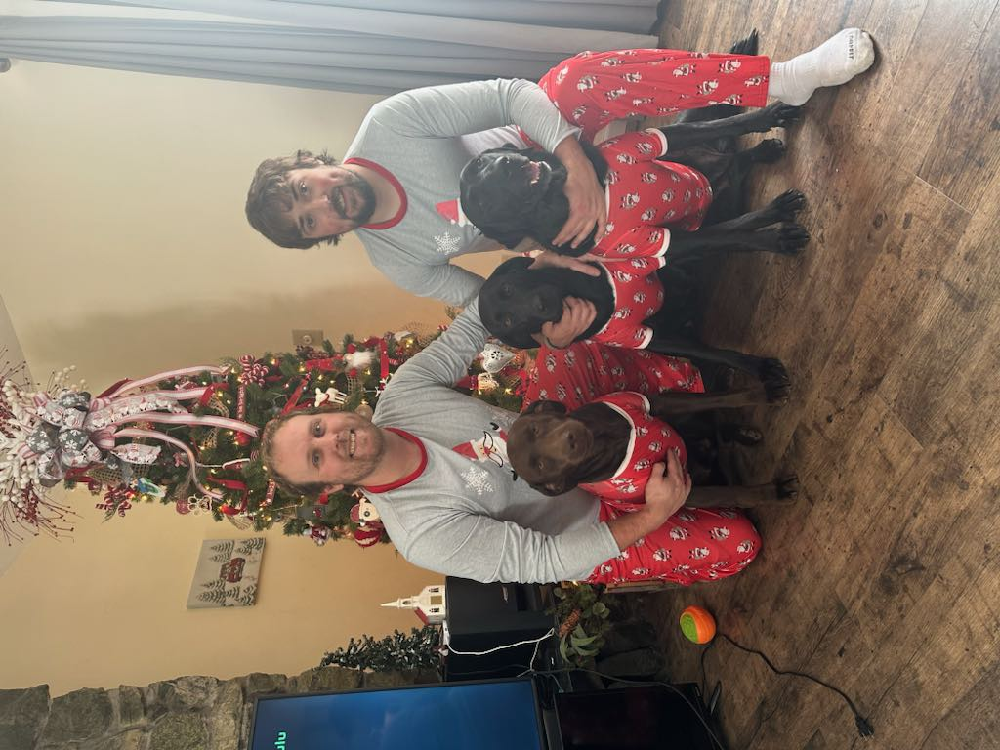
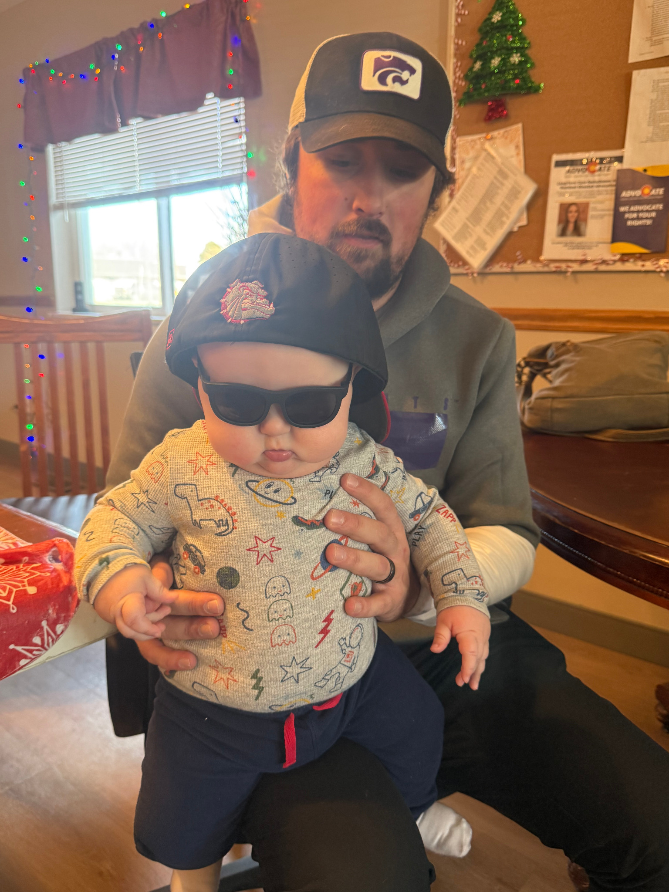
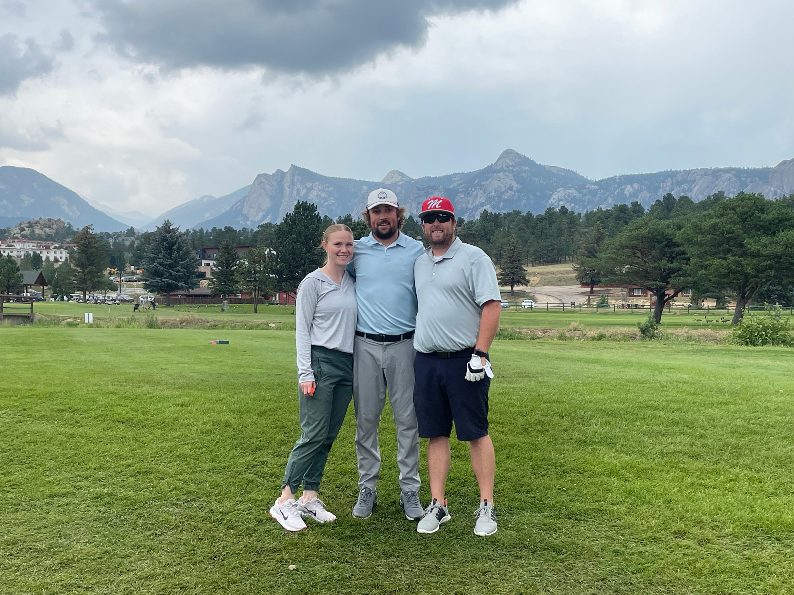

Hobbies and Interests

Golfing with Friends
Collyn enjoys golfing as a way to relax, spend time outdoors, and connect with friends.

Coaching Baseball
Coaching baseball is one of Collyn's biggest passions because it allows him to teach young athletes and help them grow.

Family Time
Spending time with family, including his brother and pets, is an important part of Collyn's life.
More Family Moments

Thanksgiving
This image shows the support system that has helped shape Collyn's life.

Fatherhood
Collyn's son represents one of his biggest motivations and priorities.

Annual Golf Trip
This trip reflects Collyn's love for golf and spending time with people close to him.